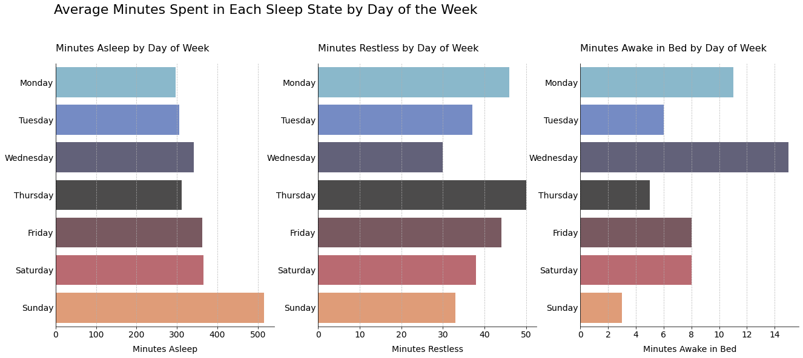

Bellabeat Case Study
Contents
{kind=link}
Bellabeat Case Study#
Fahmi I.
June 3rd, 2022
Introduction:#
introduction text here
Ask-Phase:#
ask phase text here
Prepare Phase:#
Business Task:#
Process Phase:#
I will be using Python to process, analyze, and visualize the data.
Import Libraries:#
Starting off by importing the libraries we will need, all of which are standard for data analysis.
import numpy as np
import pandas as pd
import matplotlib.pyplot as plt
import seaborn as sns
import os
We can then take a look at which data files we have available.
os.listdir(r'C:\Users\fahmi\Documents\Portfolio\Large Files\Data_Fitbase')
['dailyActivity_merged.csv',
'dailyCalories_merged.csv',
'dailyIntensities_merged.csv',
'dailySteps_merged.csv',
'heartrate_seconds_merged.csv',
'hourlyCalories_merged.csv',
'hourlyIntensities_merged.csv',
'hourlySteps_merged.csv',
'minuteCaloriesNarrow_merged.csv',
'minuteCaloriesWide_merged.csv',
'minuteIntensitiesNarrow_merged.csv',
'minuteIntensitiesWide_merged.csv',
'minuteMETsNarrow_merged.csv',
'minuteSleep_merged.csv',
'minuteStepsNarrow_merged.csv',
'minuteStepsWide_merged.csv',
'sleepDay_merged.csv',
'weightLogInfo_merged.csv']
original_minute_sleep = pd.read_csv(
r'C:\Users\fahmi\Documents\Portfolio\Large Files\Data_Fitbase/minuteSleep_merged.csv',
parse_dates=['date'], infer_datetime_format=False
)
df_sleep = original_minute_sleep.copy().drop(columns='logId')\
.rename(columns={'Id': 'id', 'date': 'date_time'})
#todo
df_sleep.isna().sum()
id 0
date_time 0
value 0
dtype: int64
def df_info(df: pd.DataFrame, name: str):
'''Prints columns and shape of a dataframe'''
print(f'{name}:\n\tColumns: {list(df.columns)}\n\tShape: {df.shape}')
df_info(df_sleep, 'df_sleep')
df_sleep:
Columns: ['id', 'date_time', 'value']
Shape: (188521, 3)
df_sleep.head(3)
| id | date_time | value | |
|---|---|---|---|
| 0 | 1503960366 | 2016-04-12 02:47:30 | 3 |
| 1 | 1503960366 | 2016-04-12 02:48:30 | 2 |
| 2 | 1503960366 | 2016-04-12 02:49:30 | 1 |
Act Phase:#
Sleep Analysis#
df_sleep['day_of_week'] = df_sleep['date_time'].dt.day_name()
df_sleep['date'] = df_sleep['date_time'].dt.date
df_sleep.head(3)
| id | date_time | value | day_of_week | date | |
|---|---|---|---|---|---|
| 0 | 1503960366 | 2016-04-12 02:47:30 | 3 | Tuesday | 2016-04-12 |
| 1 | 1503960366 | 2016-04-12 02:48:30 | 2 | Tuesday | 2016-04-12 |
| 2 | 1503960366 | 2016-04-12 02:49:30 | 1 | Tuesday | 2016-04-12 |
df_sleep['time_diff'] = df_sleep.groupby('id')['date_time'].diff()
df_sleep.head(5)
| id | date_time | value | day_of_week | date | time_diff | |
|---|---|---|---|---|---|---|
| 0 | 1503960366 | 2016-04-12 02:47:30 | 3 | Tuesday | 2016-04-12 | NaT |
| 1 | 1503960366 | 2016-04-12 02:48:30 | 2 | Tuesday | 2016-04-12 | 0 days 00:01:00 |
| 2 | 1503960366 | 2016-04-12 02:49:30 | 1 | Tuesday | 2016-04-12 | 0 days 00:01:00 |
| 3 | 1503960366 | 2016-04-12 02:50:30 | 1 | Tuesday | 2016-04-12 | 0 days 00:01:00 |
| 4 | 1503960366 | 2016-04-12 02:51:30 | 1 | Tuesday | 2016-04-12 | 0 days 00:01:00 |
df_sleep.time_diff.value_counts()
0 days 00:01:00 188061
0 days 18:36:00 3
0 days 14:37:00 3
0 days 16:24:00 3
0 days 16:01:00 3
...
0 days 00:32:30 1
1 days 05:20:00 1
0 days 07:04:00 1
0 days 05:21:30 1
0 days 15:16:30 1
Name: time_diff, Length: 376, dtype: int64
df_sleep = df_sleep[df_sleep.time_diff == np.timedelta64(1, 'm')]
df_info(df_sleep, 'df_sleep')
df_sleep:
Columns: ['id', 'date_time', 'value', 'day_of_week', 'date', 'time_diff']
Shape: (188061, 6)
def plot_sleep(df_sleep: pd.DataFrame, id: int, repeat_ylabel: bool = True):
'''
Plots sleep data for a given id
Parameters:
df_sleep (pd.DataFrame): Dataframe with sleep data to plot
id (int): ID of the user to be analyzed
repeat_ylabel (bool): Whether to repeat y-axis label
'''
WEEK_ORDER= ['Monday', 'Tuesday', 'Wednesday',
'Thursday', 'Friday', 'Saturday', 'Sunday']
SLEEP_STATE = ['Asleep', 'Restless', 'Awake in Bed']
fig, axes = plt.subplots(nrows=1, ncols=3, figsize=(22, 8), facecolor='w')
df_id = df_sleep.loc[df_sleep.id == id]
for idx, ax in enumerate(axes):
minutes = df_id.loc[df_id.value == idx + 1].groupby('day_of_week')['value'].sum()
days = df_id.groupby('date').day_of_week.value_counts()
days_count = {}
for i in range(len(days)):
days_count[days.index[i][1]] = days_count.get(days.index[i][1], 0) + 1
for i in minutes.index:
minutes[i] /= days_count[i]
sns.barplot(
orient='h', x=minutes.values, y=minutes.index,
palette='icefire', order=WEEK_ORDER, alpha=0.8, ax=ax
)
if not repeat_ylabel and idx > 0:
ax.set_yticks([])
ax.yaxis.set_tick_params(length=0)
ax.set_ylabel('')
ax.tick_params(axis='both', labelsize=14)
ax.set_xlabel(xlabel=f'Minutes {SLEEP_STATE[idx]}', fontsize=14, labelpad=10)
ax.set_title(f'Minutes {SLEEP_STATE[idx]} by Day of Week',
fontsize=16, loc='left', pad=20)
ax.grid(axis='x', linestyle='--', alpha=0.8)
sns.despine()
fig.suptitle('Average Minutes Spent in Each Sleep State by Day of the Week',
fontsize=22, x=0.123, y=1.05, ha='left')
ids = df_sleep.id.unique()
len(ids)
24
plot_sleep(df_sleep, id=ids[0])
